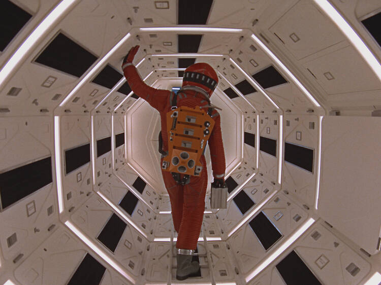

|
The GodfatherFrom the wise guys of Goodfellas to The Sopranos, all crime dynasties that came after The Godfather are descendants of the Corleones: Francis Ford Coppola's magnum opus is the ultimate patriarch of the Mafia genre. A monumental opening line (“I believe in America”) sets the operatic Mario Puzo adaptation in motion, before Coppola's epic morphs into a chilling dismantling of the American dream. The corruption-soaked story follows a powerful immigrant family grappling with the paradoxical values of reign and religion; those moral contradictions are crystallized in a legendary baptism sequence, superbly edited in parallel to the murdering of four rivaling dons. With countless iconic details—a horse's severed head, Marlon Brando's wheezy voice, Nino Rota's catchy waltz—The Godfather's authority lives on.—Tomris Laffly. |
 |
Citizen KaneBack in the headlines thanks to David Fincher's brilliantly acerbic making-of drama Mank, Citizen Kane always finds a way to renew itself for a new generation of film lovers. For newbies, the journey of its bulldozer of a protagonist - played with inexhaustible force by actor-director-wunderkind Orson Welles - from unloved child to thrusting entrepreneur to press baron to populist feels entirely au courant (in unconnected news, Donald Trump came out as a superfan). You can bathe in the film's groundbreaking techniques, like Gregg Toland's deep-focus photography, or the limitless self-confidence of its staging and its investigation of American capitalism. But it's also just a damn good story that you definitely don't need to be a hardened cineaste to enjoy.—Phil de Semlyen. |
|  |
2001 A Space OdysseyThe greatest film ever made began with the meeting of two brilliant minds: Stanley Kubrick and sci-fi seer Arthur C Clarke. "I understand he's a nut who lives in a tree in India somewhere," noted Kubrick when Clarke's name came up - along with those of Isaac Asimov, Robert A Heinlein and Ray Bradbury - as a possible writer for his planned sci-fi epic. Clarke was actually living in Ceylon (not in India, or a tree), but the pair met, hit it off, and forged a story of technological progress and disaster (hello, HAL) that's steeped in humanity, in all its brilliance, weakness, courage and mad ambition. An audience of stoners, wowed by its eye-candy Star Gate sequence and pioneering visuals, adopted it as a pet movie. Were it not for them, 2001 might have faded into obscurity, but it's hard to imagine it would have stayed there. Kubrick's frighteningly clinical vision of the future - AI and all - still feels prophetic, more than 50 years on.—Phil de Semlyen. |